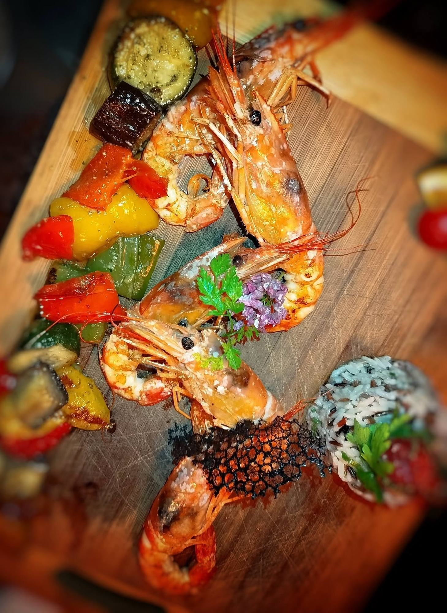
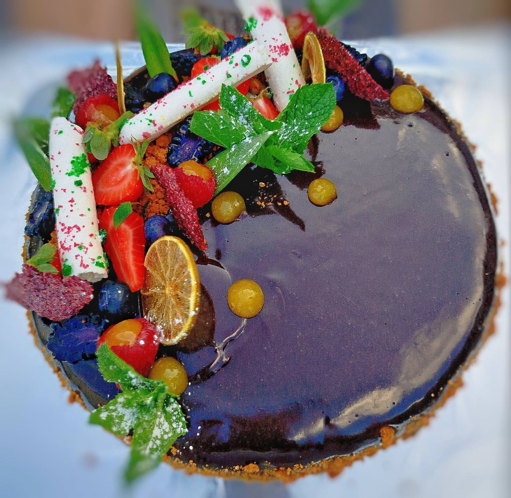

KévinMarion
Chef de cuisine. Formé à Lourdes, installé à Leucate, au bord de la Méditerranée.
Contacter Kévin
Le goût
du concours.
Formé au Lycée des métiers de l'Arrouza à Lourdes, Kévin décroche le bronze au Meilleur Apprenti de France et la 3e place au concours des Disciples d'Escoffier.
Second de cuisine à La Mangeoire, au Mercure Sensoria de Saint-Lary-Soulan, il y pratique une cuisine semi-gastronomique entièrement faite maison. Depuis, il dirige des cuisines de saison sur le littoral audois et catalan.
Dans l'assiette : produits de la mer, légumes de saison, fleurs comestibles, et une vraie pâtisserie de restaurant.

Des Pyrénées
à la mer.
- 2025
Chef de cuisine, Fish&Blues
La Franqui, Leucate. Cuisine de la mer.
- 2024
Chef de cuisine, Dix Vins Plage
Port-Leucate.
- 2023
Pâtisserie, Le Kakou
Le Barcarès.
- 2017
Second de cuisine, La Mangeoire
Mercure Sensoria, Saint-Lary-Soulan.
- 2017
Chef de cuisine, L'Athena
Port-Leucate. 150 à 200 couverts.
- Formation
Lycée des métiers de l'Arrouza
Lourdes, Hautes-Pyrénées.
Ses
assiettes.
Dressées et photographiées en service par Kévin. Faites défiler.






Monts
& Mers.
Son projet : un restaurant éco-responsable à Leucate, avec des produits locaux, engagés et uniquement de saison.
Lauréat CREACC · Montpellier, 6 décembre 2023Une brigade
à monter ?
kevin.marion6@gmail.com
Basé à Leucate. Son travail au quotidien sur Facebook.